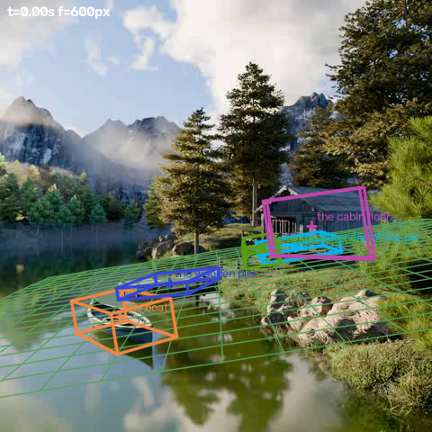

← 视频与问题 · 评估员逐视频报告（由 outputs/eval/*.md 生成）
主因层：跟踪/清单（三个“部位”物体框错：outer end→木屋门廊，pier deck→整幅画面，cabin floor→整座木屋）+ 拟合（静止结构 L/W 塌缩；“落在支撑面上的物体”的离地高=自身 H，是同义反复；水面/岸地混成一个支撑平面）+ 置信度/路由（这些病态值 conf 仍有 0.39，cabin floor 被路由采用得 0 分） 根因：焦距 f=600 由船的速度 prior + 两个带时刻锚点决定，是对的（船宽/高 MRA 1.0）。丢分集中在码头/木屋的部位题：默认 tracks 把 3 个部位跟到错的东西上，拟合又把静止结构当成无朝向的盒子（码头 L=W=2.45），clearance 对“支撑在平面上”的物体只会返回自身高度。staticanchor 让 f 从 600 升到 795，原因是无时刻锚点被当成“框底接地点”加进了平面锚点，而且 "pier" 锚点按词子集同时绑到了 "the pier deck"（整幅画面的框，框底 v=480）和 "the outer end of the pier"（门廊框）上；只关掉“当平面锚点”这一项，f 就回到 600。
simulation_0009 评估报告（评估员，2026-10-24）
数据来源：逐题 outputs/val_mh3_valcur3_routed.csv（0.7211）；3D outputs/scene_fit_eval/c_support_v8e（c_v8e_now、c_v8e_pfc2 与它逐值相同；c_v8e_robustalign f=597；c_v8e_staticanchor f=798；c_v8e_focalvote f=233）；跟踪 tracks（3D 拟合实际用的，QP_TRACKS 默认值）/ tracks_qwen / tracks_v9pc / tracks_m；场景图 scenegraph_v3grid、scenegraph_pfc3；清单 outputs/objects/simulation_0009.json。 复跑说明：我在 scratchpad 用 v8e 参数复跑了 scene_fit（工作区里有未提交的 scene_fit.py 改动，复跑结果与 c_support_v8e 逐值一致），另外用 monkeypatch 脚本做了 3 组 staticanchor 消融，还用 QP_TRACKS=tracks_v9pc 跑了一组。pipeline/ 没有改动。
视频：480×480，24 fps，66 帧（0–2.71 s）。静止相机，湖面上一条划艇向左、向远处移动；画面中部是短木码头（从岸边 x≈246 伸到水面 x≈131）；右侧是木屋，门廊前有木台阶。
题目表（mh3 valcur3）
| # | 题 | 答案 | 几何 | 拟合 v8e（conf） | Qwen 中位 | 最终 | MRA | 主因层 |
|---|---|---|---|---|---|---|---|---|
| q0 | 船长 | 3.62 | 1.29 | 2.92（0.76） | 2.8 | 2.92 fit | 0.8 | 拟合（船长方向偏短 19%，船的 yaw 取速度方向）；次要 |
| q1 | 船宽 | 1.23 | 0.89（width-unobs） | 1.26（0.76） | 1.0 | 1.26 fit | 1.0 | — |
| q2 | 船高 | 0.75 | 0.89 | 0.78（0.76） | 1.0 | 0.78 fit | 1.0 | — |
| q3 | 码头宽 | 1.53 | 0.92（width-unobs） | 2.45（0.20，collapsed） | 1.2 | 1.2 vlm | 0.7 | 拟合：静止结构 L=W 塌缩，没有朝向 |
| q4 | 码头长（岸端到水端） | 6.17 | 3.36 | 2.45（0.20，collapsed） | 3.389 | 3.389 vlm | 0.5 | 拟合塌缩；Qwen 照抄几何提示 3.36/3.39；真值轻度存疑（见下） |
| q5 | t=3 s 码头外端到船的最小距离 | 1.95 | 3.0（回退） | 7.69（0.19） | 1.5 | 1.5 vlm | 0.7 | 跟踪/清单：outer end 的框在木屋门廊上；t=3 s 超出视频（2.71 s） |
| q6 | 台阶宽 | 1.56 | 1.05 | 1.31（0.39） | 1.2 | 1.31 fit | 0.8 | 解析：stairs 锚点没匹配到 steps（几何用了场景中位深度 16.0 m）；拟合 L/W 不稳 |
| q7 | 码头面离水面高 | 0.26 | 3.0（回退） | 未拟合（框覆盖全画面） | 0.5 | 0.5 vlm | 0.0 | 跟踪：默认 tracks 里 pier deck 的框是 [0,253,386,480]（水面） |
| q8 | 木屋地板离地高 | 0.85 | 3.0（回退） | 2.29（0.39） | 1.2 | 2.29 fit | 0.0 | 跟踪（框是整座木屋）+ 拟合（支撑物体的顶面离地高=自身 H）+ 路由（conf 0.39≥0.3 被采用；Qwen 1.2 能得 0.2） |
本视频均值 5.5/9 = 0.611。
链路证据
f 来源（焦距 600，正确）
- stage A 用的是船：速度 prior 1.5 m/s，带时刻的锚点 t=0 时 11.827 m、t=1 时 13.154 m。typical 投票只有 [246, 221]，权重 1.5，来自 TYPICAL 里 boat 的 L8/W2.5/H2.5，比划艇大一倍多。phys 过滤（权重≥4）把这两票挡掉了，所以 focalfirst 没有触发。f_source 标的是 "typical_votes"，但 f 实际上是由速度 prior 和两个锚点决定的，标签有误导。
- 手算核对：船框中心 t=0 时 (133.5,357)，t=1 时 (109.5,344)。如果锚点是光轴 Z，ΔX=−457/f，ΔY≈0（水平运动，自洽），ΔZ=1.327，由 |v|=1.5 解出 f≈654；如果锚点是欧氏距离，解出 f≈529。拟合值 600 落在两者之间。船宽 1.26/1.23、船高 0.78/0.75 也说明 f≈600 正确（真值只用来定位）。
- 4 个锚点：boat（t=0、t=1）、pier（无时刻，18.92）、stairs（无时刻，23.125）。稠密深度对齐用了全部 4 个（"depth: 18 frames, 4 anchors, LOO median err 0.044"，anchor_semantics=z）。拟合本身（不开 staticanchor 时）只用 boat 的 2 个锚点，码头、台阶 anchors=0。
平面
- main_support="floor"：场景图里 4 条 conf=0.3 的默认边“on floor”（pier、outer end、steps、pier deck，以及 water surface→floor）按条数压过了 conf=1.0 的“boat on the water surface”。平面由 72 个稠密深度接地点拟合（没有地平线），点来自码头（在水面上）、门廊、台阶、木屋（在岸上），结果 dist=−2.55，roll −8.9°。在叠加图上，网格是右高左低：水面和岸地两个高度被混成了一个斜面。画面里湖面远岸线是水平的，相机并没有 roll。
- 船的支撑目标是 water surface，不是 main，所以船的接地点不进平面；这个平面实际上就是“岸地+码头”。
跟踪（3D 拟合用的默认 tracks，t=0）
| 物体 | 框 | 画面里实际是 |
|---|---|---|
| the boat | [97,331,170,383] | 船，正确 |
| the wooden pier | [131,300,248,334] | 码头，正确 |
| the wooden steps | [270,260,313,298] | 台阶，正确 |
| the pier deck (above the water surface) | [0,253,386,480] | 水面，错（拟合时跳过：“box covers the frame”） |
| the outer end of the pier | [268,257,391,288] | 木屋门廊，错 |
| the cabin floor (above the ground) | [285,207,425,284] | 整座木屋，错（不是地板这一层） |
tracks_v9pc 的部位框：pier deck=[131,304,232,323]（正确）；outer end=[131,300,248,334]（整条码头，可以接受）；cabin floor=[129,296,262,332]（码头，错）；the ground=[212,393,262,480]（水里的倒影，错）；the water surface=[193,370,268,444]（一小块水面）。 图：/tmp/claude-1017/-data-yumenghe-QuantiPhy/823507c7-069c-4584-aec0-69d0a1b126a7/scratchpad/eval_0009/box_tracks_f0.png、box_tracks_v9pc_f0.png（还有 _f24/_f48/_f65，以及 tracks_qwen、tracks_m 的对应图）
叠加图（v8e）
- t=0 / 1 / 2 / 2.7：
simulation_0009/ov_v8e_t0.0.png
… ov_v8e_t2.7.png；放大图 ovzoom_v8e_t0.png - 船：线框和船身重合，但线框比船大一圈。整段时间都在画内，vis agree 1.0。
- 码头（蓝框）：投影和码头的 2D 范围吻合，但盒子是 2.45×2.45×0.37，看不出码头是长条形。
- outer end（青色，3.35×2.87）和 cabin floor（洋红，5.94×0.18×2.29，是一块竖直的板）都套在木屋上，和它们的题意不符。
- staticanchor 叠加图：ov_static_t*.png（所有盒子整体缩小约 25%）
- tracks_v9pc 拟合叠加图：ov_v9pc_t0.0.png、ovzoom_v9pc_t2.7.png（pier / outer end / pier deck / cabin floor 四个盒子叠在码头上）

clearance 题的计算（scene_fit.answer）
parse 结果是 quantity=clearance，part='top'，reference 分别是 the water surface 和 the ground。计算走 GROUND_WORDS 分支，返回 h(中心离主平面高) + H/2。物体本身是 mode=support（底面贴在主平面上），所以 h=H/2，结果恒等于 H：cabin floor 的 2.2949 和它的 dims.H 2.2949 完全相同。也就是说，对支撑在参考面上的物体，这一项永远返回“自身高度”，不是“某个面离地的高度”。tracks_v9pc 那组 pier deck 得到 0.219（MRA 0.8），是因为码头面的框底正好在水线附近，碰巧对了；cabin floor 得到 0.467，是码头的高度。
距离题取的点
q5 用的是 fit-distance-surface：两个物体中心距离减去各自的“半径”，t0=3.0 超出拟合时间范围（t_cover=false），船按匀速外推。v8e 里 outer end 的盒子在木屋门廊，所以得到 7.69；换成 tracks_v9pc（outer end 用整条码头的框），得到 2.23（MRA 0.8），但 conf 只有 0.196，路由不会采用。
staticanchor 让焦距变差的根因（已用消融验证）
| 组 | 平面锚点数 | f | 船长 / 宽 / 高 | 码头宽 / 长 | q5 |
|---|---|---|---|---|---|
| v8e（静止锚点全丢） | 72 | 600 | 2.92 / 1.26 / 0.78 | 2.45 / 2.45 | 7.69 |
| +staticanchor | 75 | 795 | 2.31 / 1.00 / 0.62 | 1.93 / 1.93 | 4.97 |
| A：静止锚点只给 key 本身对应的物体（去掉 part_of 子物体） | 73 | 617 | 2.86 / 1.24 / 0.77 | 3.10 / 1.10 | 7.29 |
| B：静止锚点不进平面锚点，只作物体深度 | 72 | 600 | 2.92 / 1.26 / 0.78 | 3.19 / 0.89 | 6.90 |
| A+B | 72 | 600 | 同 v8e | 3.19 / 0.89 | 7.69 |
（日志：/tmp/claude-1017/-data-yumenghe-QuantiPhy/823507c7-069c-4584-aec0-69d0a1b126a7/scratchpad/eval_0009/log_staticanchor.txt、log_expA.txt、log_expB.txt、log_expAB.txt；脚本 exp.py）
- 多出来的 3 个平面锚点都是 Z=18.92 的 pier 锚点，挂在 3 个框的底边中点上：码头框底 (189,334)；"the pier deck" 框底 (193,480)，也就是画面最下沿；"the outer end of the pier" 框底 (329,288)，在门廊下沿，实际深度约 23 m。后两个是
_anchors_for用词子集匹配（{"pier"} ⊂ 物体名词集）绑到 part_of 子物体上的，而且这两个子物体的框本身就是错的。v=480 和 v=288 两行同为 18.92 m，在任何平面上都不可能成立，于是平面和 f 一起被拉偏。 - 即使只给码头本身，“框底中点=锚点深度”也不成立：锚点是到物体参考点（中心）的距离，码头还架在水面以上，它的框底是近端桩脚的水线，不是锚点深度处的接地点。
- 静止锚点作为物体深度用在 stage B 时（B 组），码头 rms 从 0.5 升到 4.1 px，L/W 从 2.45/2.45 变成 0.89/3.19。原因是 18.9 m 和混合斜平面上码头框底所在的位置互相矛盾，根子在上面“平面”一节说的水面/岸地混合。
- 台阶的锚点 "stairs" 在所有组里都没绑上（SYNONYMS 里没有 steps↔stairs），所以台阶始终 anchors=0。
问题清单（按影响面排序）
- 【拟合 + 解析，qp-code-3d】无时刻（静止）锚点的用法。现象见上节：开 staticanchor 后 f 从 600 变成 795，本视频的 3D 均值从 0.525 降到 0.475。影响面：验证集 4 个视频（0009、0015、0027s、0034as），测试集 82 个视频带无时刻锚点，很多 key 是部位/端点（"slope far end"、"table left"、"near person"）。in_progress 里“_anchors_for 丢掉不带时刻的静止锚点”只说要用，没有说怎么用；本条是那条的落地方式。 建议：(a) 无时刻锚点只作“物体参考点的距离观测”，约束 ‖P_center‖（或按 anchor_semantics 约束 Z），不进 plane_anchors，也不用框底点；静止物体在全部帧都施加这个约束，不只 t=0。运动物体的无时刻锚点不用，或只用在静止段。(b) 绑定时排除清单里 part_of≠null 的子物体，以及“框覆盖全画面”或被跳过的物体；key 里带端点词（end、left、right、near、far）时，绑到父物体对应的端点，而不是中心。(c) 如果锚点和当前 f、平面下的物体深度相差 >15%，降低权重并在 quality 里标出来，不要硬拉平面。验收：0009 开锚点后 f 在 600±5% 以内，船 W/H 不变，码头 rms 不超过 2× 基线；0015、0034as 不变差；测试集抽查 captured_0001/0023 的 f 不跳变。
- 【跟踪/清单，qp-tools】部位物体的跟踪身份。现象：默认 tracks 里 pier deck 是整幅画面、outer end 是门廊、cabin floor 是整座木屋；tracks_v9pc 改好了 pier deck，outer end 退化成整条码头，但 cabin floor 变成了码头、the ground 跟到了水中倒影。3D 拟合（c_support_v8e）用的仍是默认 tracks（旧名字 "the pier deck above the water surface" 是整句短语当成了 grounding）。影响：q5、q7、q8 三题，以及所有“X 的某部位”题（0015 的底座/雕塑分界同类）。 建议：(a) 3D 拟合改用与清单名字一致、经过 recheck 的跟踪（tracks_v9pc 这一代），或者对默认 tracks 中“框覆盖 >80% 画面”的物体回退到 v9pc 的框。(b) part_of 子物体（outer end、deck、floor）应在父物体的框或掩码内部定位：端点类部位取父物体长轴靠水/远离岸的一端，面类部位取父物体的水平面那一层；父物体框外的候选一律拒绝（cabin floor 跟到码头、outer end 跟到门廊都违反这一点）。(c) "the ground / water surface" 这类 reference_only 的面不当作物体跟踪，交给支撑面。验收：0009 的 outer end 框落在码头左端（x≈131–160），pier deck 落在码头面，cabin floor 落在木屋框内的下沿；拟合中不再出现被跳过的全画面框。
- 【拟合，qp-code-3d】clearance 对支撑物体同义反复，并且没有使用局部地面。现象：q8 的 2.2949 恰好等于 dims.H；v9pc 那组 q7 0.219 是碰巧对。影响：所有 “height of X above the ground/floor/water” 题，凡是 X 被判为 support 的都会中招（cabin floor、pier deck、桌面、座位……），q8 因此 0 分。 建议：clearance 的对象如果是某个结构的面（floor、deck、seat、tabletop、清单 shape=panel/thin），答案取“该面所在行”与“同深度处参考面所在行”的高差，即 Z·Δv/f，或者用父物体框底到局部支撑面的高差。参考面要用题目点名的那个面（the ground ≠ the water surface），不要用全局 main plane。如果对象就是 mode=support 且贴在参考面上，返回值等于自身 H，这时应标 degenerate（conf≤0.2），不能给 0.39。验收：0009 q8 不再等于 cabin 的 H，q7、q8 的 conf 能区分对错。
- 【场景图 + 拟合，qp-tools / qp-code-3d】主支撑按条数投票，水面和岸地被混成一个平面。现象：4 条 conf 0.3 的默认“on floor”边压过 1 条 conf 1.0 的“boat on water surface”，main_support=floor；平面由码头+岸上物体的接地点拟合，roll −8.9°（画面没有 roll）。 建议：scenegraph 的默认边不要凭空引入 "floor" 节点：清单里已有 ground 类节点（the ground、the water surface）时，默认边指向它们；水上的结构（pier）默认 on water。scene_fit 选 main_support 按 conf 加权，而不是按条数；分属不同面的接地点分开拟合（或者只拟合 main 面），并检查 roll（静止相机、无 roll 先验时 >5° 就告警）。验收：0009 只有一个水面平面，roll<3°；船、码头桩脚在同一个面上。
- 【拟合 + 置信度，qp-code-3d】静止结构的 L/W 塌缩与不稳定。现象：码头在 6 组拟合中宽分别为 2.45 / 1.71 / 1.93 / 3.10 / 3.19 / 2.80，长为 2.45 / 2.59 / 1.92 / 1.10 / 0.89 / 2.58；台阶宽为 1.31 / 1.35 / 0.99 / 0.88，tracks_v9pc 那组里 L=1.53 才是横向宽度，L/W 互换。conf 一律在 0.39 左右，v9pc 那组码头宽 2.8 的 conf 是 0.39，--fit-d3-conf 0.3 下会被采用（MRA 0.1，而 Qwen 能得 0.7）。 建议：这正是 in_progress 里 0015 报告提出的“conf 加稳定性项（不同平面/焦距假设下尺寸离散 >25% → conf<0.5）”，本视频的数值可以作为验收样本，标“已在修”。另外补一条：无速度的静止物体，朝向应取自掩码/框的长边在支撑面上的方向（或场景图里的 along 关系），不能取速度方向；拿不到朝向时，L、W 都标 unobservable。“width of steps” 取横向（与相机横轴近似平行的那一边）。验收：码头 L/W 在不同组之间的离散 <25%，否则 conf<0.3。
- 【解析，qp-tools】depth_info 名字同义：stairs ↔ steps（以及 staircase、stair）。现象：几何的台阶宽用了场景中位深度 16.04 m，得到 1.05；用 23.125 m 的 stairs 锚点按同样像素算约 1.5。scene_fit 里台阶也是 anchors=0。in_progress（0015）里有“名字匹配去修饰词/容错拼写”，本条是对它的补充：同义词表加 steps/stairs/staircase、pier/dock/jetty、boat/rowboat/canoe 等，并且对 SYNONYMS（scene_fit）和 parse 两处统一。验收：0009 台阶在 geo 和 fit 里都有锚点。
- 【路由，qp-tools】D3 按拟合 conf 0.3 路由时，没有排除 degenerate 的 clearance 和 out-of-range 时刻。现象：q8 fit 2.29（conf 0.39）被采用得 0 分，Qwen 1.2 能得 0.2。q5 的 t=3 s 超出视频（t_cover=false），这一条路由已经把 conf 压到 0.19，没有影响。建议：第 3 条落地前，route 对 method=fit-height-above-ground 且物体 mode=support 的值不采用、不作提示。验收：q8 回到 Qwen。
- 【提示锚定，qp-tools，已知现象】q4 的 Qwen 三路：a=3.6（无提示）、b=3.36、v9=3.389，后两路照抄几何提示。几何的码头长（3.36）只是框的横向像素宽×深度/f，码头是斜放的，这个值必然偏短。这类“斜放结构的长度”几何本应标 unobservable、不给提示（与 width-unobservable 同理）。对应 WORKING_RULES 里“宁可不给提示”的原则；本题差距小（0.5 对 0.5），列为低优先。
- 【拟合，qp-code-3d，次要】TYPICAL 里 boat 的 {L8, W2.5, H2.5} 对划艇、小船过大，给出的 f 投票是 246/221（真实约 600）。目前被 phys≥4 过滤挡掉了，但 c_v8e_focalvote 那组 f 正是被它拉到 233，整段崩坏。f_source 也错标成 "typical_votes"（实际是速度 prior+锚点），quality 里 F_CONF 按 0.8 计算。建议：f_source 如实标注（prior_kinematic+anchors）；"boat" 的典型尺寸按清单里的 expected_size_class 分档，或者不用作 f 投票。
真值存疑
- q4 码头长 6.17（轻度存疑，不建议改逻辑）。画面上码头两端横向相差 115 px，深度约 19 m、f=600 时横向约 3.6 m，若长 6.17 则纵深分量要 5.0 m。按行几何（船水线 v=383 在 11.8 m、码头水端桩水线 v≈328 在约 18.5 m，解出相机离水面约 2.65 m、俯仰≈0）推算，码头面两端（v≈313 / 305.5）的深度差只有约 2 m，长度约 4.0–4.4 m。稠密深度给出两端只差约 1 m。可能的解释是岸端有一段被草挡住。
- q5 问的是 t=3 s，视频只有 2.71 s（66 帧）。真值 1.95 与“船匀速外推到 3 s 时离码头水端的距离”大致相符（重建约 1.9–2.2），属于外推题，不算矛盾。